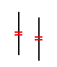

Equal command
Use the Equal command to make elements equal. You can apply the equal relationship to the lengths of lines and the radii of arcs and circles.

Note:
You can apply an Equal relationship to multiple elements in a single operation. After selecting an element to apply a relationship to, you can press Shift+Select to add more elements to the set or deselect elements from the set. You can also use a Fence to select elements to apply a relationship to. You can press Shift+Fence to add more elements to the set. Shift+Fence does not deselect selected elements.